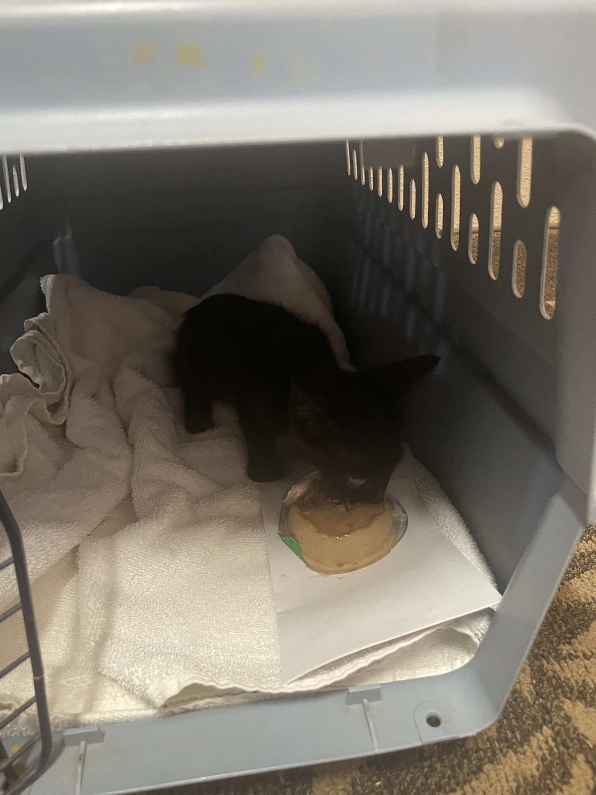
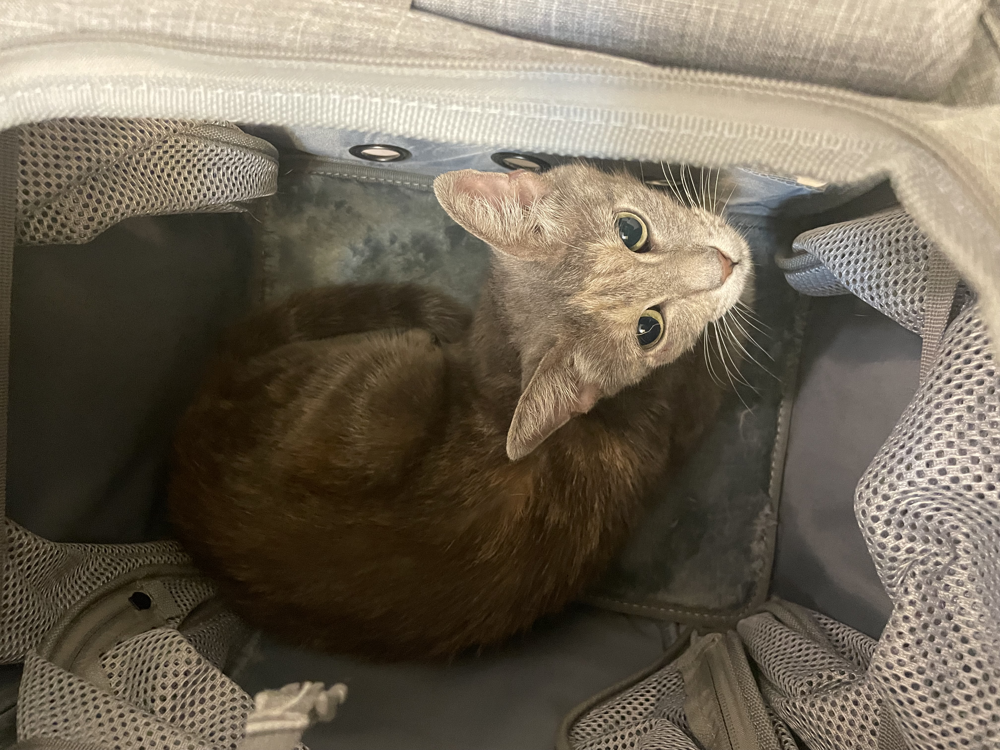

Limited capacity
Shelters and rescues cannot accept every animal when space, staffing, or foster homes are limited.
Happy's Foundation / Houston
Happy's is developing a Houston animal-welfare network that connects existing organizations, professionals, fosters, and volunteers. Alongside it, a separate local-services business is being built to create paid work and potentially support the mission.

If you've found an animal in Houston, the right next step depends on its condition, location, and whether it may already have a home.
I Found an AnimalWhat the research shows
Houston already has people and organizations doing difficult, skilled work. However, demand, capacity, and reliable information do not always meet in the same place at the same time.
Shelters and rescues cannot accept every animal when space, staffing, or foster homes are limited.
Open-ended expectations and limited follow-up can turn willingness into burnout or a commitment that cannot last.
Intake, scheduling, repeated communication, and status updates compete with time needed for direct animal care.
Finders may not know which resource fits, whether it has capacity, or what responsible step comes next.
What Happy’s can contribute
Happy’s is exploring a coordination role between shelters, veterinarians, TNR groups, foster networks, student organizations, and community members. The goal is to support their existing expertise, not replace it.
Organize reviewed Houston resources and make responsible first steps easier to understand.
Compare a reviewed need with verified capability and current availability before making a handoff.
Use clearer commitments, communication, and follow-up so one finder or foster is not carrying the entire case alone.

One vision. Two organizations.
The developing nonprofit is intended to focus on animal-welfare education, resource coordination, foster-network development, and community partnerships.
A separate business is being developed to connect customers with useful local services, compensate providers when work begins, cover its own expenses, and create earned revenue.
The organizations are intended to remain legally and financially separate. The business may support the Foundation through separately documented contributions, but no fixed amount or percentage is being promised.
Understand the model →Find reviewed Houston-area resources and responsible next steps.
Find local help →See the current services available through Happy's developing marketplace.
Explore services →Foster, apply, volunteer, partner, donate, or find another way to take part.
Choose your path →Happy’s is developing the organization through research, resource mapping, and direct conversations before attempting to scale the coordination model.
Published a four-part research series examining the global problem, Houston’s context, approaches that show promise, and where Happy’s could fit.
Read the research →Organizing public information about local animal-welfare resources by geography, service area, and available capabilities.
Explore the directory →Studying foster barriers, conducting outreach, learning from early manual coordination, and exploring responsible university involvement.
See the Foster Network →They can’t ask.
We don’t wait.